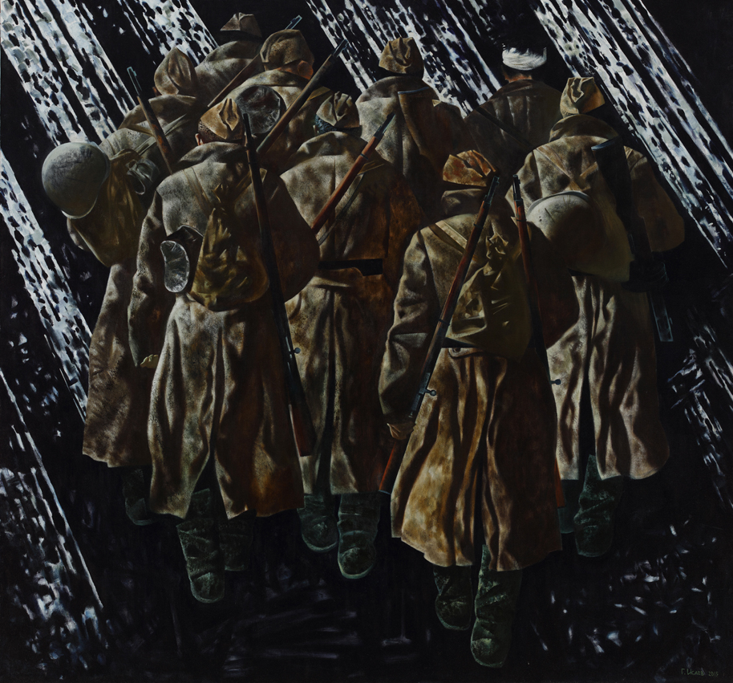
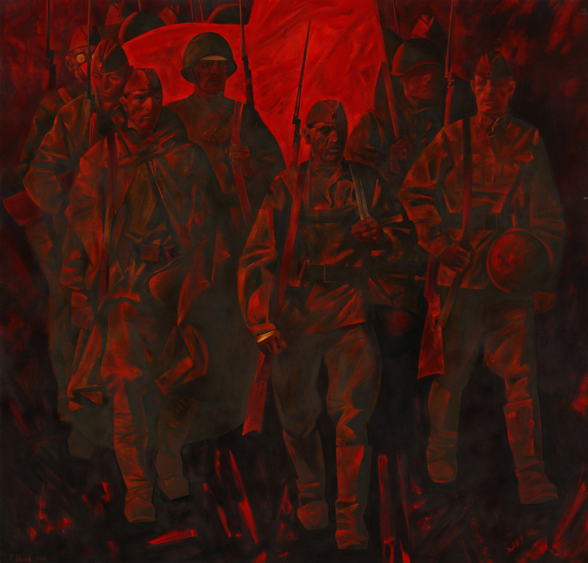
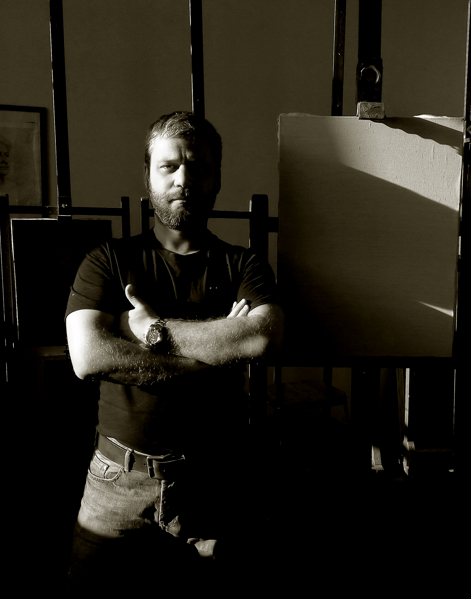

02
03 04
04
 05
05


Геннадий Анатольевич Исаев — российский художник-живописец, старший преподаватель кафедры живописи и композиции Академии художеств имени Ильи Репина. Родился и вырос в Санкт-Петербурге, закончил художественный лицей им. Иогансона. В 2003 году закончил с отличием Санкт-Петербургский государственный академический институт живописи, скульптуры и архитектуры имени И.Е. Репина (мастерская монументальной живописи А.А. Мыльникова), член Союза Художников. Награжден благодарностью Комитета по культуре Санкт-Петербурга (2022) и серебряной медалью Союза Художников (2023). В 2025 году стал обладателем гран-при международного проекта «Творческая осень» с картиной «Портрет Александра Федорова», посвящённой погибшему в 2024 году в зоне СВО художнику и добровольцу.
Тема войны всегда была значимой для Геннадия Анатольевича Исаева, в первую очередь потому, что многие члены его семьи принимали участие в Великой Отечественной войне (оба деда были на фронте, обе бабушки жили в оккупации). Картины «Красное знамя» и «Пехота» об этой войне были созданы в 2015 году. Позднее художник начал соединять образы бойцов прошлого и СВО, ключевой для него стала тема преемственности: как задач, стоящих перед разными поколениями сражающихся, так и их духа, моральных качеств.
По словам Г.А. Исаева, «преимущество наших солдат в том, что для них война — это не просто борьба за пространственную среду, а борьба скорее на духовном уровне». Именно поэтому в создании образов бойцов на картинах его вдохновляют иконописные образы, облики из древней истории Руси. Такой «плоскостный», нереалистичный, но очень выразительный стиль икон сильно повлиял на его творчество. Красный и золотой — основные цвета полотен Исаева, вдохновлённые цветовой палитрой икон, цветами алых древнерусских стягов и флагом СССР. Красный — «самый энергичный цвет в мире», как говорит художник, — это «цвет крови, праздника жизни и жертвенности».
Цвет и композиция — ключевые элементы, позволяющие зрителю понять замысел художника. Геннадий Анатольевич считает, что основные компоненты хорошей картины — раскрытая тема, ясность для зрителя, присутствие драматического напряжения и профессиональное исполнение. Но главное для него — присутствие эмпатии: чтобы зритель по-настоящему понял картину, в её центре должен быть именно человек.
«Когда ты пишешь, ты должен представить себе сценарий. Ты должен придумать в голове короткометражку, и, как актёр, ты должен прожить, прочувствовать всё, что ощущает персонаж. А потом ты выхватываешь одно, самое нужное мгновение и показываешь всё, что ты почувствовал. Это очень сложно» — пишет Исаев.
Исаев вкладывает в свои картины такой посыл, потому что надеется, что эти моральные качества могут помочь современным поколениям справиться с новыми вызовами и не потерять человечность. Своими картинами он надеется запустить «цепную реакцию» — вновь вдохновить общество на создание нового и напомнить о тех, кто пожертвовал своими жизнями ради того, чтобы сегодня мы имели возможность творить.
Благодарим Геннадия Анатольевича за помощь в подготовке материала. Познакомившись с его произведениями и изучив его творчество, мы встретились с художником в Академии Художеств и смогли взять у него интервью.
[Интервью: Романова Екатерина]